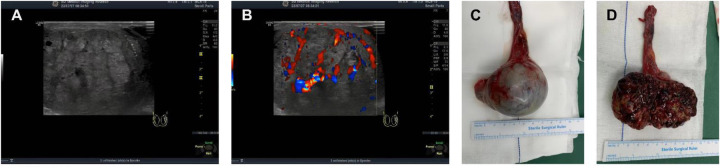
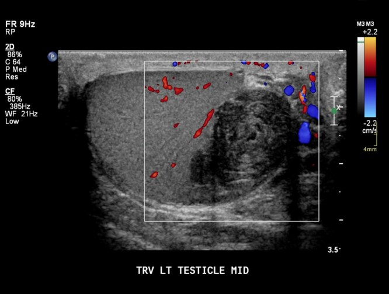
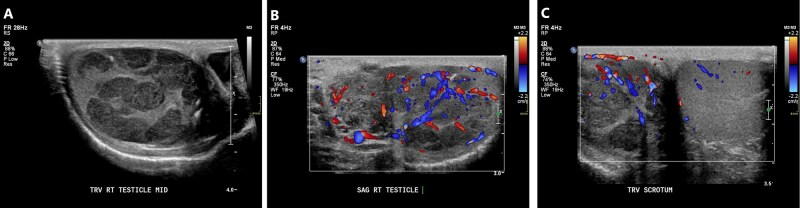
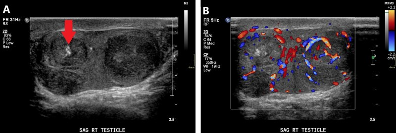
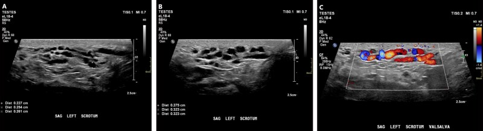
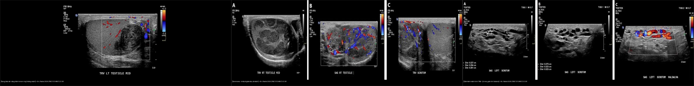

638 — Khối bìu–tinh hoàn ở trẻ: u tế bào mầm, nang biểu bì & giãn tĩnh mạch tinh / Pediatric scrotal & testicular masses
Tags: pattern:khoi-tinh-hoan-nhi pattern:u-te-bao-mam pattern:nang-bieu-bi pattern:gian-tinh-mach-tinh vung:biu-tinh-hoan-nhi score:WHO-2022 protocol:sieu-am-Doppler-biu
Mức chắc chắn (certainty): tổng hợp y văn (literature synthesis) + ca nguyên văn (verbatim case) cho ca u tế bào mầm hỗn hợp ở bé trai 13 tuổi — ảnh CC BY 4.0.
1. Tổng quan bệnh học – cơ chế hình ảnh
- Khối bìu–tinh hoàn ở trẻ chia hai chân dung theo tuổi, phản ánh hai con đường sinh bệnh khác nhau (WHO 2022 – "Blue Book"):
- Trước dậy thì (đỉnh 0–4 tuổi): khối không sinh từ tân sinh tế bào mầm tại chỗ (non-GCNIS) — 60–75% lành tính (chủ yếu u quái teratoma), còn lại phần ác tính chủ yếu là u túi noãn hoàng (yolk sac tumor, YST).
- Sau dậy thì (đỉnh 15–19 tuổi): nhóm sinh từ GCNIS — ~75% ác tính, đa số là u tế bào mầm không seminoma hỗn hợp (mixed non-seminomatous GCT).
- Vì sao trên siêu âm u tế bào mầm thường "giảm âm" (hypoechoic)? Nhu mô tinh hoàn lành chứa nhiều vách sinh tinh (septula) + ống sinh tinh tạo nhiều mặt phản hồi nên có hồi âm dày đặc. U tế bào mầm đặc, mật độ tế bào cao, ít mô liên kết → ít mặt phản hồi → vùng giảm âm. Seminoma thường rất đồng nhất (một dòng tế bào) → khối giảm âm đều, bờ rõ; NSGCT có hoại tử, xuất huyết, vôi hóa, nhiều dòng tế bào → không đồng nhất, bờ nham nhở.
- Nang biểu bì (epidermoid cyst) là khối lành tính ("germ cell tumor" lành theo tên cũ), chiếm ~1,5% u tinh hoàn: bên trong là nhiều lớp sừng (keratin) xếp đồng tâm → mỗi lớp keratin tạo một mặt phản hồi → dấu hiệu "vòng hành" (onion-ring): các vòng giảm âm – tăng âm xen kẽ; hoàn toàn không có mạch trên Doppler. Tới 60% ca có hình ảnh onion-ring; ngoài ra có thể gặp dạng "bia bắn" (target) với lõi tăng âm.
- Giãn tĩnh mạch tinh (varicocele): tĩnh mạch tinh trái đổ thẳng đứng vào tĩnh mạch thận trái (khác bên phải đổ thẳng vào IVC) → dễ ứ trệ; > 90% ở bên trái, gặp ở ~15% nam giới. Trên siêu âm thấy cấu trúc dạng ống, khoang chứa dịch = trống âm (anechoic), giãn thêm khi Valsalva; Doppler xác nhận có dòng chảy (chẩn đoán Se 97%/Sp 94%).
- Dấu ấn khối u (serum tumor markers) quyết định hướng: AFP tăng trong u túi noãn hoàng / NSGCT (trừ choriocarcinoma); β-hCG tăng trong choriocarcinoma / tế bào hợp bào nuôi; LDH phản ánh khối lượng u, hay tăng ở seminoma. Cạm bẫy: nhũ nhi có thể AFP sinh lý cao trong vài tháng đầu — phải so theo tuổi.
2. Mẫu hình + chẩn đoán phân biệt theo vị trí (gamut)
Mẫu hình chính: một khối trong tinh hoàn (intratesticular) — dễ ác tính — phân biệt với tổn thương ngoài tinh hoàn (extratesticular) — dễ lành tính.
- Đặc, giảm âm, có mạch → u tế bào mầm: seminoma (đồng nhất, tuổi lớn hơn) vs NSGCT (không đồng nhất, có hoại tử/vôi hóa, tuổi trẻ hơn) vs u tế bào mầm ở trẻ nhỏ (u túi noãn hoàng).
- Đặc, không mạch, "vòng hành" → nang biểu bì (lành, có thể bảo tồn tinh hoàn).
- Nhiều ổ hai bên → u lympho/bạch cầu (thứ phát) hoặc u tế bào thượng thận lạc chỗ (adrenal rest tumor — ở trẻ có tăng sản thượng thận bẩm sinh).
- Khối tế bào Leydig/Sertoli: thường hiếm, kèm biểu hiện nội tiết (dậy thì sớm/gynecomastia).
- Dạng ống ngoài tinh hoàn: giãn tĩnh mạch tinh ("búi giun"), nang mào tinh (epididymal cyst), spermatocele — không phải khối đặc tinh hoàn.
- Biến thể bình thường hay nhầm: mào tinh phụ (appendix testis) — cấu trúc tròn 5–6 mm bám mào tinh, có thể bị xoắn gây đau; cơ quan mào tinh và sỏi mào tinh (scrotal pearl).
3. Bảng so sánh phân biệt (ma trận đối chiếu)
| Thực thể (entity) | Hình ảnh điển hình (siêu âm) | Chốt vào (rule-in) | Chốt loại (rule-out) | Gợi ý xác nhận |
|---|---|---|---|---|
| Seminoma (âm tính) | Khối đặc giảm âm đều, bờ rõ, đơn ổ, mạch trong u tăng | Đồng nhất giảm âm + tăng mạch trong u ở nam trưởng thành (tuổi trung bình 40) | Bờ nham nhở + vôi hóa/hoại tử + không đồng nhất = không phải seminoma đơn thuần | β-hCG/LDH; mô bệnh sau cắt tinh hoàn |
| NSGCT (u tế bào mầm không seminoma) | Không đồng nhất, giảm âm nhiều ổ, bờ không đều, có thể vôi hóa/hoại tử | Khối không đồng nhất nhiều ổ + AFP tăng + tuổi trẻ hơn (trung bình ~30) | Đồng nhất giảm âm đều, bờ rõ = nghiêng seminoma/u lành | AFP, β-hCG; CT bụng–ngực giai đoạn |
| U túi noãn hoàng ở trẻ < 4 tuổi | Khối đặc giảm âm, đơn ổ, tăng mạch; tinh hoàn thường to | Trẻ nhỏ (0–4 tuổi) + khối đặc + AFP tăng (so theo tuổi) | AFP bình thường theo tuổi + không mạch = nghĩ nang lành | AFP (so tuổi); mô bệnh |
| Nang biểu bì (epidermoid cyst) | Vòng giảm–tăng âm đồng tâm "onion-ring" (~60%), hoặc dạng "bia bắn"; bờ rõ; không mạch | Bờ rõ + vòng đồng tâm + hoàn toàn vô mạch + marker bình thường | Tăng mạch trong u = loại nang biểu bì (nghĩ u thật) | Marker âm + mổ bảo tồn tinh hoàn (testis-sparing) |
| U lympho/bạch cầu (thứ phát) | Khối giảm âm hai bên, đơn ổ hoặc nhiều nốt, giàu mạch | Tổn thương hai bên + bệnh ác tính hệ thống đã biết | Một bên, đơn ổ = nghiêng u tiên phát | Bilan bệnh máu; sinh thiết |
| Tăng sản thượng thận lạc chỗ (adrenal rest) | Nốt giảm âm hai bên, bờ thùy múi, giàu mạch, thường ở rốn tinh hoàn | Hai bên + tăng sản thượng thận bẩm sinh (CAH) + ACTH cao | Một bên + marker dương = u tế bào mầm | Nội tiết (17-OHP, ACTH); theo dõi |
| Giãn tĩnh mạch tinh (varicocele) | Cấu trúc dạng ống trống âm trên bìu trái; giãn khi Valsalva | ≥ 2,5 mm lúc nghỉ / ≥ 3,0 mm khi Valsalva + có dòng trên Doppler + bên TRÁI | Khối đặc trong tinh hoàn có mạch = loại varicocele (u thật) | Doppler + Valsalva; ≥ 3,0 mm = grade lớn |
- Ảnh ghép đối chiếu:
— 3 khối bìu–tinh hoàn trên cùng một chuỗi (siêu âm): nang biểu bì (vô mạch) vs seminoma (có mạch) vs varicocele (dạng ống).
4. Protocol chụp + hệ phân độ/điểm chuẩn hóa
- Siêu âm là đầu tay (first-line): đầu dò linear tần số cao 7,5–15 MHz, bệnh nhân nằm ngửa, so sánh hai bên, gray-scale + Doppler màu/năng lượng, đo kích thước 3 chiều rồi tính thể tích (thể tích ellipsoid ≈ D1 × D2 × D3 × 0,52). Bắt buộc Valsalva để đánh giá varicocele. Nghi tổn thương mạch/tắc cấp thì kèm Doppler năng lượng.
- Khi có khối đặc trong tinh hoàn: (1) định lượng marker AFP/β-hCG/LDH; (2) hình ảnh giai đoạn — CT ngực–bụng–chậu (hoặc MRI) tìm hạch sau phúc mạc/di căn, đánh giá bên đối diện; (3) cân nhắc MRI bìu khi siêu âm không kết luận.
- Phân độ/giai đoạn: dùng phân loại WHO 2022 (GCNIS-derived vs non-GCNIS) để phản ánh sinh bệnh; giai đoạn u tinh hoàn theo TNM (hạch sau phúc mạc là nơi di căn trước tiên). Nang biểu bì và u lành nhỏ: chỉ định bảo tồn (testis-sparing surgery) để giữ nội tiết/sinh sản — không cắt tinh hoàn toàn bộ mặc định.
flowchart TD
A[Khối bìu - tinh hoàn, không đau ở trẻ] --> B{Siêu âm: trong hay ngoài tinh hoàn?}
B -->|Ngoài tinh hoàn, dạng ống| C[Giãn TM tinh / nang mào tinh / spermatocele]
B -->|Trong tinh hoàn| D{Có mạch trên Doppler?}
D -->|Không mạch, vòng onion-ring| E[Nang biểu bì - lành: bảo tồn tinh hoàn]
D -->|Có mạch| F[Định lượng AFP / β-hCG / LDH + hình ảnh giai đoạn]
F --> G{Tuổi + marker}
G -->|Trẻ < 4 tuổi, AFP tăng| H[U túi noãn hoàng -> cắt tinh hoàn + hóa trị]
G -->|Sau dậy thì, không đồng nhất, AFP tăng| I[NSGCT -> staging + cắt tinh hoàn]
G -->|Sau dậy thì, đồng nhất, LDH| J[Seminoma -> staging ± xạ/hóa trị]
5. Biến thể bình thường và cạm bẫy
- Mào tinh phụ (appendix testis) — cấu trúc tròn nhỏ bám mào tinh, có thể bị xoắn; đừng gọi là u. Sỏi mào tinh (scrotal pearl) tăng âm kèm bóng lưng, hay sau phẫu thuật.
- Nang mào tinh / spermatocele: tổn thương ngoài tinh hoàn, thường không cần mổ; đừng nhầm với khối đặc trong tinh hoàn.
- AFP sinh lý ở nhũ nhi: trong vài tháng đầu, AFP có thể cao tự nhiên — luôn so theo tuổi để tránh chẩn đoán nhầm u ác.
- "Khối đơn độc một bên" là quy luật của u tế bào mầm nguyên phát; nếu thấy hai bên, phải nghĩ u lympho/bạch cầu hoặc tăng sản thượng thận lạc chỗ — hướng xử trí hoàn toàn khác.
- Varicocele bên phải hoặc mới xuất hiện ở tuổi lớn: phải tìm khối sau phúc mạc chèn ép tĩnh mạch (nguyên nhân thứ phát) — không coi là varicocele "vô căn".
- Mất tổn thương do đầu dò sai tần số: khối nhỏ giảm âm có thể bị bỏ sót bằng đầu dò tần số thấp (dùng cho tinh hoàn to); bắt buộc đầu dò linear tần số cao.
- Satisfaction of search: thấy varicocele không được dừng lại — vẫn phải quét hết tinh hoàn để loại khối đặc kèm theo.
6. Tự lượng giá — Blind Quiz
Ca 1 — Bé trai 13 tuổi, khối bìu trái không đau, đang giai đoạn dậy thì sớm.

- Gợi ý lâm sàng: khối bìu trái, AFP và hCG đều tăng cao.
- Câu hỏi: Mô tả tổn thương? Vì sao phải định lượng cả AFP lẫn hCG? Chẩn đoán?
Bấm để hiện đáp án (findings + chẩn đoán)
- Dấu hiệu: (A) siêu âm bìu trái khối đặc giảm âm; (B) Doppler màu: mạch trong u phong phú; (C) bệnh phẩm cắt tinh hoàn: u đặc ranh giới rõ.
- Chẩn đoán: u tế bào mầm hỗn hợp (u túi noãn hoàng + ung thư biểu mô bào thai). Marker trước mổ: AFP 399,7 ng/mL (40× ULN) và hCG 14.937 mIU/mL (7.469× ULN); sau mổ 1 tháng AFP 1,56 ng/mL, hCG < 0,2 mIU/mL. Theo dõi 29 tháng không tái phát/di căn.
- Vì sao đình lượng cả hai: AFP chỉ điểm u túi noãn hoàng, hCG chỉ điểm thành phần tế bào hợp bào nuôi/ung thư biểu mô bào thai → cần cả hai để phản ánh thành phần hỗn hợp và theo dõi đáp ứng.
- Nguồn ảnh: Fig 1, Yang J et al., Front Pediatr 2026 (PMC13036159), CC BY 4.0.
Ca 2 — Khối tinh hoàn trái, vòng hành xen kẽ, không thấy mạch trong u.

- Gợi ý lâm sàng: nam trẻ, khối bìu không đau, marker khối u bình thường.
- Câu hỏi: Dấu hiệu đặc trưng? Chẩn đoán và hướng xử trí?
Bấm để hiện đáp án (findings + chẩn đoán)
- Dấu hiệu: khối trong tinh hoàn trái, các vòng giảm âm – tăng âm đồng tâm (onion-ring), bờ rõ, không có mạch trên Doppler.
- Chẩn đoán: nang biểu bì (epidermoid cyst) — lành tính, chiếm ~1,5% u tinh hoàn, tới 60% có hình onion-ring; các lớp keratin đồng tâm tạo nhiều mặt phản hồi. Xử trí: mổ bảo tồn tinh hoàn (testis-sparing surgery) nếu khẳng định được, không cắt toàn bộ mặc định.
- Nguồn ảnh: Fig 11, Lam Shin Cheung J & Bhaduri M, Br J Radiol 2026 (PMC13134857), CC BY.
Ca 3 — Nam trưởng thành, tinh hoàn phải có nhiều ổ giảm âm định khu; so sánh với ca u tế bào mầm không seminoma.

- Gợi ý lâm sàng: khối bìu không đau, không sốt.
- Câu hỏi: Khối giảm âm đơn độc như thế nào gợi ý seminoma? So với tổn thương không đồng nhất, vôi hóa, bờ nham nhở thì nghĩ gì?

Bấm để hiện đáp án (findings + chẩn đoán)
- Dấu hiệu: ảnh trên (Fig 12) — nhiều ổ giảm âm định khu, có mạch = seminoma; ảnh dưới (Fig 13) — ≥ 3 ổ không đồng nhất, bờ nham nhở, có ổ vôi hóa = u tế bào mầm không seminoma (NSGCT).
- Chẩn đoán: phân biệt seminoma (đồng nhất giảm âm, tuổi trung bình ~40) vs NSGCT (không đồng nhất, tuổi trẻ hơn ~30). Hai dòng trùng hình ảnh nhưng khác marker (AFP trong NSGCT; LDH ở seminoma) và tiên lượng/xử trí → marker + mô bệnh quyết định.
- Nguồn ảnh: Fig 12–13, Lam Shin Cheung J & Bhaduri M, Br J Radiol 2026 (PMC13134857), CC BY.
Ca 4 — Bìu trái, khối "búi giun" giãn khi rặn.

- Gợi ý lâm sàng: nam trẻ đau bìu âm ỉ, sờ thấy "búi giun" bên trái.
- Câu hỏi: Dấu hiệu? Ngưỡng đường kính chẩn đoán? Vì sao bên trái hay gặp?
Bấm để hiện đáp án (findings + chẩn đoán)
- Dấu hiệu: (A) bìu trái có cấu trúc dạng ống giãn tới 2,6 mm; (B) giãn thêm khi Valsalva; Doppler xác nhận có dòng.
- Chẩn đoán: giãn tĩnh mạch tinh trái (varicocele) — ngưỡng ≥ 2,5 mm lúc nghỉ / ≥ 3,0 mm khi Valsalva, siêu âm Se 97%/Sp 94%. Bên trái hay gặp vì tĩnh mạch tinh trái chạy thẳng đứng đổ vào tĩnh mạch thận trái; gặp ở ~15% nam. Varicocele phải/mới xuất hiện → tìm khối sau phúc mạc.
- Nguồn ảnh: Fig 6, Lam Shin Cheung J & Bhaduri M, Br J Radiol 2026 (PMC13134857), CC BY.
Ca 5 — Ảnh tổng hợp 3 khối bìu–tinh hoàn cùng chuỗi siêu âm.

- Câu hỏi: Xếp 3 khối theo mức độ nguy cơ ác tính từ thấp đến cao và nêu 1 dấu hiệu chốt cho mỗi khối.
Bấm để hiện đáp án (findings + chẩn đoán)
- Đáp án: nang biểu bì (lành — chốt: vòng onion-ring + vô mạch) < varicocele (lành, nhưng có thể là dấu hiệu khối chèn ép nếu phải/mới xuất hiện — chốt: dạng ống giãn khi Valsalva có dòng) < u tế bào mầm (seminoma/NSGCT) (ác — chốt: khối đặc có mạch trong tinh hoàn).
- Nguồn ảnh: ghép Fig 11 + Fig 12 + Fig 6, Lam Shin Cheung J & Bhaduri M, Br J Radiol 2026 (PMC13134857), CC BY; ghép bằng
tools/make_composite.py.
Bài liên quan chéo
- 636 – Cấp cứu niệu–sinh dục nhi (chấn thương thận & xoắn tinh hoàn/buồng trứng)
- 637 – Chấn thương bàng quang & niệu đạo nhi
- 151 – U thận đặc: RCC vs oncocytoma vs AML
- 536 – U mầm & u mô đệm–dây sinh dục buồng trứng ở người trẻ
- 450 – Mắt nhi (retinoblastoma vs Coats)
Ảnh
- Tên file:
638_khoi-biu-tinh-hoan_*. Nguồn + giấy phép từng ảnh trongimages/CREDITS.md(toàn bộ CC BY 4.0 / CC BY). - Ảnh ghép:
images/composite_epidermoid-vs-u-tinh-hoan-vs-varicocele.jpg(Pillow letterbox, giữ aspect, không crop/kéo giãn).
Không dùng để chẩn đoán độc lập khi chưa có người hướng dẫn.